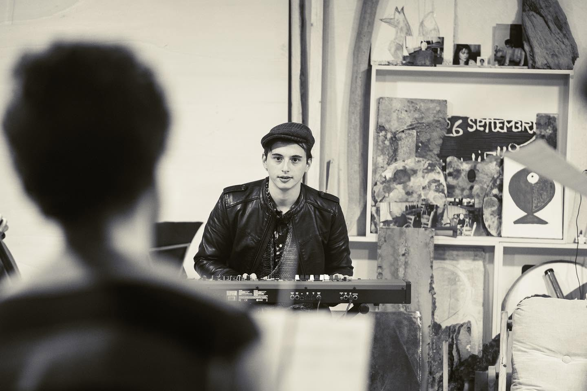
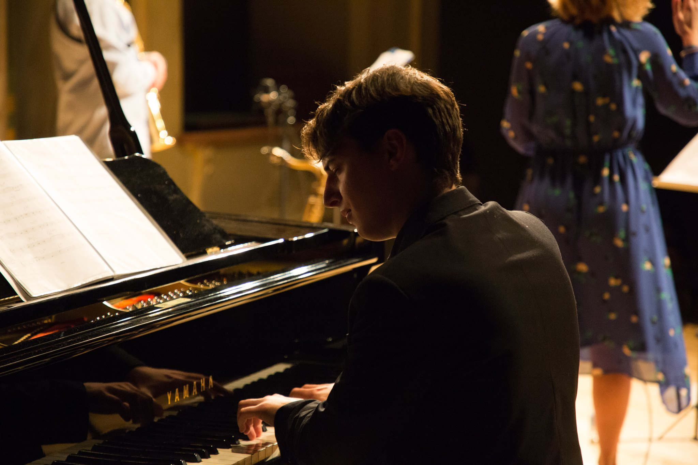
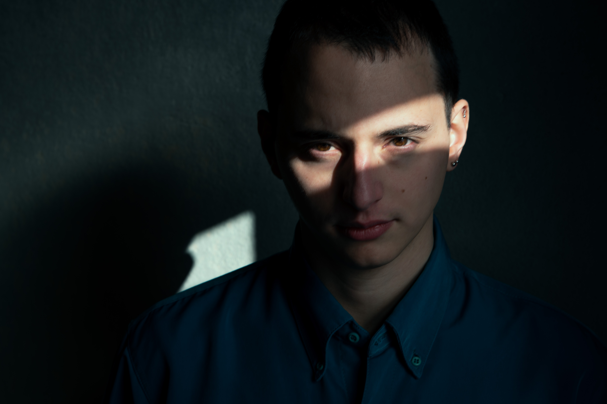

Mauro Spanò - Biografia
Mauro Spanò è un pianista e compositore originario di Trapani (Sicilia), attualmente attivo in Trentino-Alto Adige. Fin da bambino mostra un profondo fascino per l’arte in ogni sua forma, sviluppando una spiccata propensione per la musica applicata alle immagini. Convinto che la musica legata alla dimensione visiva possieda un potere evocativo unico, capace di toccare le corde più profonde della coscienza, Spanò scrive traducendo la realtà – o la sua percezione di essa – in una personalissima narrazione per immagini.
Cresciuto in una famiglia di musicisti, respira la musica classica fin dall'infanzia, sebbene il suo percorso accademico abbia poi intrapreso una strada differente. Nel 2019 consegue con il massimo dei voti e la lode il Diploma Accademico di Secondo Livello in Pianoforte Jazz presso il Conservatorio di Vicenza. Il jazz rappresenta per lui un amore incondizionato a cui si dedica interamente: con il quintetto RAME e altre formazioni esplora questa musica in tutte le sue sfumature, dallo swing mainstream al jazz contemporaneo, fino all'improvvisazione radicale. Questo percorso di ricerca lo porta a esibirsi in prestigiosi contesti concertistici, sia in Italia che all'estero, e ad ottenere riconoscimenti in diversi concorsi nazionali e internazionali.
Il periodo della pandemia segna una svolta, spingendolo verso nuovi territori espressivi. Si avvicina alla musica elettronica e avvia collaborazioni con note personalità dell’intrattenimento online. In un percorso distante dalle sue abitudini, si ritrova a suonare musica pop in eventi legati al mondo del gaming, diventando persino una carta collezionabile per un set distribuito in tutta Italia. Esperienze surreali che non scalfiscono la sua urgenza compositiva, ma che scardinano una visione forse troppo autoreferenziale che a volte il mondo della ricerca pura porta con sé.
Se in passato tendeva a considerare la complessità come un valore assoluto, l'immersione in un contesto così speculare accende in lui una nuova sensibilità: l'attenzione verso l'esperienza dell'ascoltatore. Consapevole che l'opera non si esaurisce sul palco ma si compie nell'emozione di chi la riceve, Spanò trasforma la sua ricerca nella sfida di creare formule capaci di accorciare le distanze, offrendo una musica profonda ma aperta, capace di accogliere e dialogare con il pubblico.
Oggi, sebbene l'improvvisazione rimanga uno strumento espressivo per lui indispensabile, la scrittura è la dimensione che più lo completa. Guardare uno spartito finito gli restituisce la stessa soddisfazione di un pittore davanti alla sua tela ultimata; scorgere nuovi dettagli tra le sue pieghe compositive è come scoprire sfumature inedite in un film amato e visto mille volte. In questo senso, persino il limite della pagina scritta si trasforma in un perimetro di sicurezza, intimità e assoluta libertà creativa.





Studi
- Diploma Accademico di Secondo Livello in Discipline Musicali - Pianoforte Jazz (Conservatorio di Vicenza) – 110/110 con Lode
- Diploma Accademico di Primo Livello in Pianoforte Jazz (Conservatorio di Vicenza) – 110/110
- Corsi di studio e Masterclass di perfezionamento e ricerca con: Paolo Birro, Pietro Tonolo, Salvatore Maiore, Mauro Beggio, Michele Calgaro, Giampaolo Casati, Roberto Dani, Stefano Battaglia, Kevin Hays, Marco Tamburini.
Concorsi
- Primo Premio Assoluto al Concorso Nazionale "Chicco Bettinardi" di Piacenza edizione 2019
- Primo Premio Assoluto al Concorso Internazionale "Giovani Musicisti" di Treviso
- Primo Premio Tomorrow's Jazz Award 2021 organizzato da Veneto Jazz, Teatro La Fenice
- Terzo Premio al Concorso Internazionale "JazzJuniors" di Cracovia (Polonia)
- Finalista al Concorso Internazionale "EuropaFest" di Bucarest (Romania)
- Finalista al Festival Nazionale dei Conservatori di Frosinone
Concerti
Si è esibito dal vivo sia in piano solo che con diversi tipi di formazione in Italia e all'estero:
- Teatro Olimpico - Vicenza
- Teatro La Fenice (Sale Apollinee) - Venezia
- Nis Jazz Festival - Serbia
- Bucharest Jazz Festival - Romania
- ICE Kraków Congress Centre - Polonia
- Casa Del Jazz - Roma
- Teatro Comunale - Vicenza
- Teatro Comunale - Ferrara
- Palazzina Marfisa D'Este - Ferrara